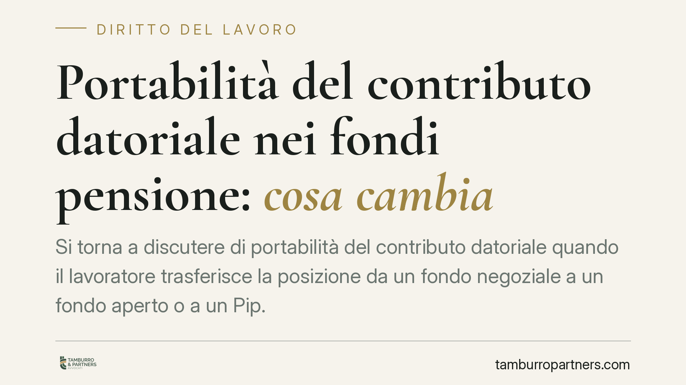

Portabilità del contributo datoriale nei fondi pensione: cosa cambia
Si torna a discutere di portabilità del contributo datoriale quando il lavoratore trasferisce la posizione da un fondo negoziale a un fondo aperto o a un Pip. L'ipotesi di intervento normativo riapre un tema delicato: senza una previsione espressa nel CCNL il rischio di contenzioso è concreto. Vediamo cosa dice oggi la normativa e come muoversi con prudenza.

Il fatto
Il dibattito riguarda la cosiddetta portabilità del contributo datoriale: la possibilità, per il lavoratore dipendente che trasferisce la propria posizione previdenziale da un fondo pensione negoziale (il fondo di categoria previsto dai contratti collettivi) a un fondo pensione aperto o a un piano individuale pensionistico (Pip), di continuare a beneficiare del contributo versato dal datore di lavoro.
Su questo punto è annunciato un intervento in sede di Legge di Bilancio 2026. Attenzione: alla data di redazione il testo definitivo e la relativa decorrenza non risultano pubblicati in Gazzetta Ufficiale con estremi certi. Le indicazioni circolate su contenuti e tempi di operatività vanno pertanto considerate indicative e da verificare sul testo di legge una volta vigente, compresa ogni data di decorrenza. Riferiamo qui l'inquadramento della disciplina attuale e i nodi che una riforma dovrebbe sciogliere.
Le parti sociali hanno già segnalato criticità: in assenza di una previsione espressa nella contrattazione collettiva, l'obbligo per il datore di continuare a versare il contributo presso un fondo diverso da quello di categoria rischia di generare contenzioso.
Inquadramento normativo
La disciplina della previdenza complementare è contenuta nel d.lgs. 5 dicembre 2005, n. 252. Il trasferimento della posizione individuale è regolato dall'art. 14 del decreto, che consente all'aderente di trasferire la posizione ad altra forma pensionistica dopo un periodo minimo di permanenza (due anni), oltre che nei casi di perdita dei requisiti di partecipazione.
Il nodo è il comma 6 dell'art. 14: la norma vigente prevede che, in caso di trasferimento, il lavoratore ha diritto al versamento alla forma prescelta del TFR maturando e dell'eventuale contributo a carico del datore di lavoro *nei limiti e secondo le modalità stabilite dai contratti o accordi collettivi*. In altri termini, già oggi la portabilità del contributo datoriale non è un automatismo: dipende da quanto previsto dalla fonte collettiva.
È qui che si colloca la tensione. Un intervento legislativo che rendesse la portabilità un diritto generalizzato dovrebbe coordinarsi con il rinvio alla contrattazione collettiva oggi contenuto nel comma 6. La vigilanza sul sistema resta affidata alla Covip, la Commissione di vigilanza sui fondi pensione.
Implicazioni pratiche
Per il lavoratore dipendente. Finché manca una disciplina chiara, trasferire la posizione a un fondo aperto o a un Pip può comportare la perdita del contributo datoriale, se il CCNL non ne prevede la portabilità. La scelta va valutata confrontando costi, rendimenti e, soprattutto, la sorte del versamento aziendale.
Per il datore di lavoro. La prospettiva di dover versare il contributo presso forme pensionistiche diverse da quella negoziale impone attenzione agli obblighi che effettivamente derivano dal contratto applicato. Versare per prudenza dove non dovuto, o rifiutare dove dovuto, espone entrambe le parti a rischi.
Per sindacati e datori (parti sociali). La leva è contrattuale: il comma 6 rinvia alla fonte collettiva. Le clausole sui trasferimenti e sulla portabilità del contributo diventano il terreno su cui prevenire il contenzioso.
Per le funzioni HR e payroll. Occorre mappare, per ciascun CCNL applicato, se e in che misura il contributo datoriale segue il lavoratore in caso di trasferimento, aggiornando le procedure di gestione delle adesioni e dei versamenti.
Cosa fare in concreto
- Verificate il CCNL applicato: individuate le clausole su trasferimento della posizione e portabilità del contributo datoriale, perché il diritto dipende oggi dalla fonte collettiva (art. 14, comma 6, d.lgs. 252/2005).
- Attendete il testo definitivo della Legge di Bilancio 2026 prima di modificare prassi aziendali: non adeguate procedure sulla base di notizie non ancora consolidate in norma vigente.
- Lavoratori: prima di trasferire la posizione, chiedete conferma scritta sulla sorte del contributo datoriale e simulate l'impatto economico del trasferimento.
- Datori e HR: predisponete un censimento delle adesioni in essere e delle regole contrattuali applicabili, così da reagire rapidamente all'entrata in vigore della nuova disciplina.
- Parti sociali: valutate l'aggiornamento delle clausole collettive per prevenire incertezze applicative e contenzioso.
Disclaimer
Contributo informativo a cura di Tamburro & Partners - Avv. Giuseppe Tamburro. Non costituisce parere legale.
Ogni storia di lavoro ha i suoi tempi.
Se gestisci HR e vuoi un confronto su contenzioso, ispezioni o licenziamenti, scrivi allo studio. Ti rispondiamo entro un giorno lavorativo.